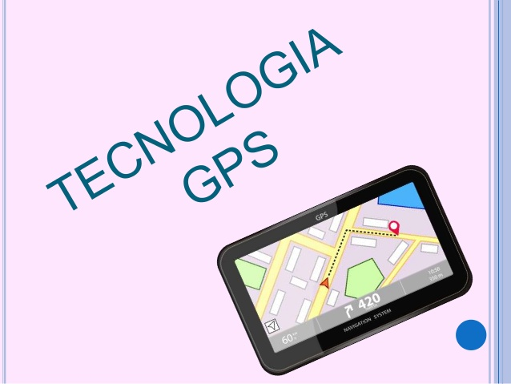

GPS
 Visite a páginaO GPS, ou Global Positioning System (Sistema de Posicionamento Global), é um elaborado sistema de satélites e outros dispositivos que tem como função básica prestar informações precisas sobre o posicionamento individual no globo terrestre.